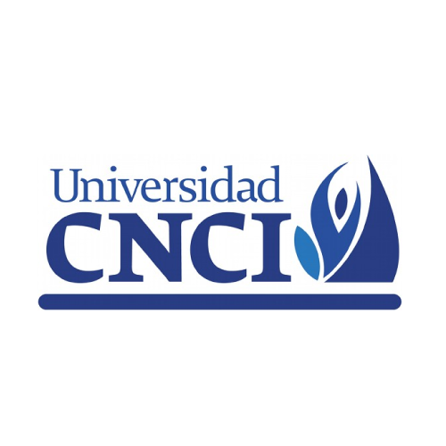

Resúmen Profesional
Colaborar en la aplicación de sistemas de información con gran interés en desarrollar conocimiento. Considerado una persona trabajadora, comunicativa, comprometida y proactiva. Deseoso de encontrar una oportunidad para adquirir más experiencia profesional.
Historial Laboral
Subgerente Administrativo / Cinépolis - CDMX
- Administración de personal
- Manejo y control de indicadores
- Supervición y capacitación de personal
- Retroalimentación constante
- Creación de plan de acción
- Creación de plan de trabajo
- Coordinar operación de trabajo
- Seguimiento a proceso de objetvos
- Evaluación constante en desempeño
- Excelente comunucación de trabajo
- Creación de informes y reportes de desempeño
- Auditorías constantes de áreas de trabajo
- Correcto sistema de control
Formación
Superior
- Universidad Mexicana - Plantel Polanco CDMX
Octavo Cuatrimestre
Licenciatura en sistemas computacionales
Fecha prevista de egreso: Diciembre 2023
Media Superior
- Universidad CNCI - Plantel Cuicuilco CDMX
Certificado
2015 - 2018
Aptitudes
- Diseño y estructuración de base de datos
- Lógica computacional
- Diseño de páginas web con bases de datos
- Saber exponer un proyecto de software
- Experiencia en licitación
- Conocimiento de lenguaje técnico
- Redacción de informes financieros
- Manejo de personal
- Excelentes habilidades de comunicación
- Transcripción y redacción de documentos
Diplomas
- Desarrollo empresarial - Universidad CNCI (2018)
- Inglés básico - Universidad CNCI (2018)
- Informática básica - Universidad CNCI (2018)